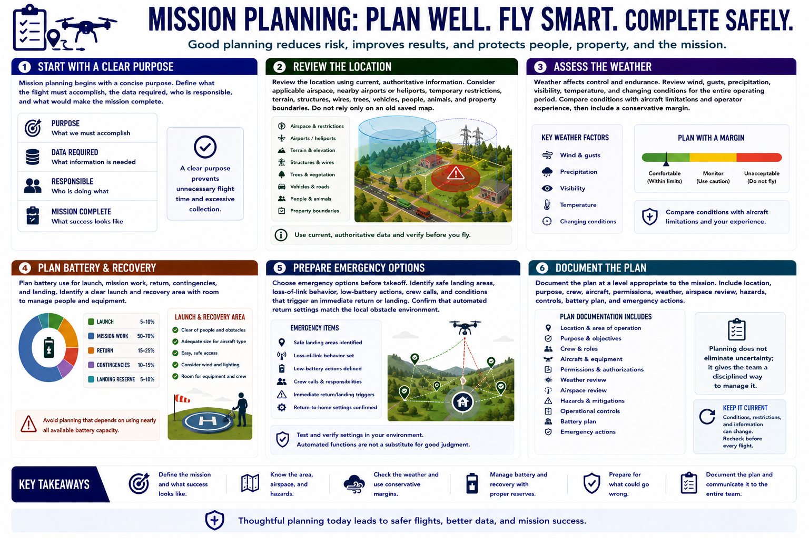

Mission Planning Basics
Connecting to LMS... Progress: in progress

Narration
Mission planning begins with a concise purpose. Define what the flight must accomplish, the data required, who is responsible, and what would make the mission complete. A clear purpose prevents unnecessary flight time and excessive collection.
Review the location using current, authoritative information. Consider applicable airspace, nearby airports or heliports, temporary restrictions, terrain, structures, wires, trees, vehicles, people, animals, and property boundaries. Do not rely only on an old saved map.
Weather affects control and endurance. Review wind, gusts, precipitation, visibility, temperature, and changing conditions for the entire operating period. Compare conditions with aircraft limitations and operator experience, then include a conservative margin.
Plan battery use for launch, mission work, return, contingencies, and landing. Identify a clear launch and recovery area with room to manage people and equipment. Avoid planning that depends on using nearly all available battery capacity.
Choose emergency options before takeoff. Identify safe landing areas, loss-of-link behavior, low-battery actions, crew calls, and conditions that trigger an immediate return or landing. Confirm that automated return settings match the local obstacle environment.
Document the plan at a level appropriate to the mission. Include location, purpose, crew, aircraft, permissions, weather, airspace review, hazards, controls, battery plan, and emergency actions. Planning does not eliminate uncertainty; it gives the team a disciplined way to manage it.